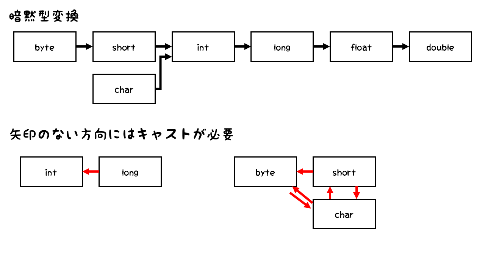

この章では、プログラム内で使用できるデータの種類と、それらを格納するための変数について学びます。
リテラルとは、プログラム内で直接表現される値のことです。Javaでは以下のようなリテラルが使用できます。
整数リテラルは、整数値を直接表現するためのリテラルです。例えば、10や-5などが整数リテラルになります。
整数リテラルは、10進数、16進数、8進数、2進数の形式で表現できます。
また、アンダースコアを使用して、数値の可読性を高めることもできます。例えば、1_000_000は1000000と同じ値です。
先頭に0bを付けることで2進数リテラル、先頭に0を付けることで8進数リテラル、先頭に0xを付けることで16進数リテラルを表現できます。
浮動小数点リテラルは、小数点を含む数値を直接表現するためのリテラルです。例えば、3.14や-0.001などが浮動小数点リテラルになります。
浮動小数点リテラルは、10進数の形式で表現されます。また、指数表記を使用して、例えば1.5e3のように表現することもできます。
文字リテラルは、単一の文字を直接表現するためのリテラルです。例えば、'A'や'あ'などが文字リテラルになります。
文字リテラルは、シングルクォート(')で囲まれた1文字で表現されます。エスケープシーケンスを使用して、特殊な文字を表現することもできます。
また、Unicodeを用いて、例えば'\u0041'のように表現することもできます。
文字列リテラルは、複数の文字を直接表現するためのリテラルです。例えば、"Hello, World!"や"Java"などが文字列リテラルになります。
文字列リテラルは、ダブルクォート(")で囲まれた文字列で表現されます。エスケープシーケンスを使用して、特殊な文字を表現することもできます。
論理リテラルは、真(true)または偽(false)の値を直接表現するためのリテラルです。例えば、trueやfalseが論理リテラルになります。
論理リテラルは、キーワードtrueとfalseで表現されます。
nullリテラルは、null値を直接表現するためのリテラルです。nullは、オブジェクトが存在しないことを表す特別な値です。
nullリテラルは、キーワードnullで表現されます。
整数リテラルの後ろにLを付けると、そのリテラルはlong型として扱われます。例えば、100Lはlong型のリテラルになります。
浮動小数点リテラルの後ろにFを付けると、そのリテラルはfloat型として扱われます。例えば、3.14Fはfloat型のリテラルになります。
変数は、プログラム内で値を格納するための領域です。変数を使用することで、プログラム内でデータを操作したり、結果を保持したりできます。
変数を使用するには、まず変数を宣言し、その後に値を代入します。変数の宣言には、変数の型と変数名が必要です。
例えば、以下のように変数を宣言し、値を代入することができます。
int age; // 変数の宣言
age = 25; // 値の代入データ型は、変数が格納できる値の種類を定義するものです。Javaには、プリミティブ型（基本データ型）と参照型の2種類のデータ型があります。
プリミティブ型は、基本的なデータ型であり、整数型、浮動小数点型、文字型、論理型の4つのカテゴリに分類されます。プリミティブ型の変数は、実際の値を直接格納します。
以下は、Javaのプリミティブ型とその特徴をまとめた表です。この表以外の型はすべて参照型です。
| データ型 | サイズ | 範囲 |
|---|---|---|
| byte | 8ビット | -128 ～ 127 |
| short | 16ビット | -32,768 ～ 32,767 |
| int | 32ビット | -2,147,483,648 ～ 2,147,483,647 |
| long | 64ビット | -9,223,372,036,854,775,808 ～ 9,223,372,036,854,775,807 |
| float | 32ビット | 単精度浮動小数点数 |
| double | 64ビット | 倍精度浮動小数点数 |
| char | 16ビット | '\u0000' ～ '\uffff' |
| boolean | 1ビット | trueまたはfalse |
参照型は、オブジェクトを参照するためのデータ型です。参照型の変数は、実際の値を格納するのではなく、オブジェクトへの参照（アドレス）を格納します。
参照型には、クラス、インターフェース、配列などがあります。例えば、Stringクラスは文字列を表す参照型の一例です。
型変換は、あるデータ型の値を別のデータ型に変換することを指します。Javaでは、暗黙の型変換（自動的な型変換）と明示的な型変換（キャスト）の2種類の型変換があります。
暗黙の型変換は、Javaが自動的に行う型変換です。例えば、int型の値をlong型の変数に代入する場合、Javaは自動的にint型の値をlong型に変換します。
暗黙の型変換は、データの損失がない場合にのみ行われます。例えば、int型の値をbyte型の変数に代入する場合、データの損失が発生する可能性があるため、暗黙の型変換は行われません。
明示的な型変換は、プログラマが明示的に行う型変換です。キャスト演算子を使用して、あるデータ型の値を別のデータ型に変換します。
例えば、int型の値をbyte型の変数に代入する場合、キャスト演算子を使用して明示的に型変換を行うことができます。
int num = 100;
byte b = (byte) num; // キャストを使用した型変換キャストを使用する際には、データの損失が発生する可能性があることに注意する必要があります。例えば、int型の値がbyte型の範囲を超える場合、キャストを使用しても正しい値が得られない可能性があります。
なお、誤解しやすいですが、暗黙の型変換と同じ方向へキャストすることも可能です。
int num = 100;
long l = (long) num; // 暗黙の型変換と同じ方向へのキャスト以下の画像はプリミティブ型の暗黙の型変換を示しています。矢印がある方向へは自動で型変換されますが、それ以外の方向に型変換を行う場合はキャストを使用する必要があります。

特に、byte,short,charの型変換には注意が必要です。
また、参照型の型変換も存在しますが、これは後の章で詳しく説明します。
定数は、プログラム内で変更されない値を表すためのものです。Javaでは、定数を宣言するためにfinalキーワードを使用します。
例えば、以下のように定数を宣言することができます。
final double PI = 3.14159;定数は、宣言された後に値を変更することができません。定数を使用することで、プログラムの可読性が向上し、誤って値を変更してしまうことを防止できます。
変数のスコープは、変数が有効な範囲を指します。Javaでは、変数のスコープはブロック（{}で囲まれた範囲）によって定義されます。
変数は、宣言されたブロック内でのみ有効です。例えば、以下のコードでは、変数xはif文のブロック内でのみ有効です。
if (condition) {
int x = 10;
// xはこのブロック内でのみ有効
}スコープ外の変数を使用しようとすると、コンパイルエラーが発生します。
変数のスコープを理解することは、プログラムの正確性と可読性を保つために重要です。適切なスコープを持つ変数を使用することで、コードのバグを減らし、メモリの効率的な使用を促進できます。
型推論は、Java 10以降で導入された機能で、変数の宣言時に型を省略できることを指します。コンパイラが式の右辺の型をもとに、左辺の変数の型を自動的に推論します。
var name = "Alice"; // String型として推論
var age = 25; // int型として推論型推論は、宣言と初期化が同時に行われる場合にのみ使用できます。
型推論を使用することで、コードの冗長性を減らし、可読性を向上させることができます。ただし、過度に使用するとコードの理解が難しくなる可能性があるため、適切なバランスを保つことが重要です。
型推論は、ローカル変数の宣言にのみ使用でき、フィールドやメソッドのパラメータには使用できません。
具体的には以下のような場合に型推論が使用されます。
整数はデフォルトではint型として扱われ、小数はdouble型として扱われるため、型推論はこれらの型を自動的に推論します。他の型として推論する場合は末尾にLやFを記述しlong型やfloat型として扱うか、キャストを使用する必要があります。
また、定数と併用する場合はfinal varの順で宣言する必要があります。
ラッパークラスは、基本データ型に対応する参照型です。ラッパークラスを使用することで、基本データ型をオブジェクトとして扱うことができます。
Javaには、以下のラッパークラスがあります。
ラッパークラスは、基本データ型の値をオブジェクトとして扱う必要がある場合に使用されます。例えば、コレクションフレームワークなどのクラスは、オブジェクトを扱うため、基本データ型をラッパークラスに変換して使用します。
基本データ型からラッパークラスへ変換することをボクシング（Boxing）といい、逆にラッパークラスから基本データ型へ変換することをアンボクシング（Unboxing）といいます。
Javaは、必要に応じて自動的にボクシングとアンボクシングを行います。例えば、以下のコードでは、int型の値がInteger型に自動的にボクシングされます。
Integer boxedInt = 10; // int型の値がInteger型に自動的にボクシングされるまた、以下のコードでは、Integer型の値がint型に自動的にアンボクシングされます。
Integer boxedInt = 10;
int unboxedInt = boxedInt; // Integer型の値がint型に自動的にアンボクシングされるただし、暗黙の型変換とボクシング/アンボクシングは併用できません。例えば、int型の値をdouble型に変換する場合、ボクシングと暗黙の型変換は同時に使用できません。
Integer boxedInt = 10;
double d = boxedInt; // コンパイルエラー: ボクシングと暗黙の型変換は併用できないこのような場合は、アンボクシングか型変換を明示的に行う必要があります。
Integer boxedInt = 10;
double d = boxedInt.doubleValue(); // 明示的にアンボクシングしてから暗黙の型変換を行う
double e = (double) boxedInt; // または、明示的な型変換を使用するラッパークラスを使用する際には、null値に注意する必要があります。ラッパークラスの変数はnull値を取ることができるため、null値を扱う際にはNullPointerExceptionが発生する可能性があります。
例えば、以下のコードでは、Integer型の変数がnull値を取るため、NullPointerExceptionが発生します。
Integer boxedInt = null;
int unboxedInt = boxedInt; // NullPointerExceptionが発生するこれは、アンボクシングをする際に、内部でvalueOf()メソッドが呼び出され、null値を扱おうとするとNullPointerExceptionが発生するためです。
Java Silver用学習ノートへ戻る